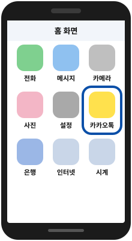
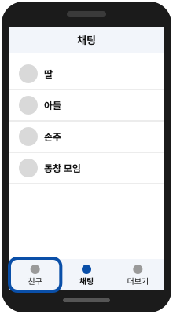
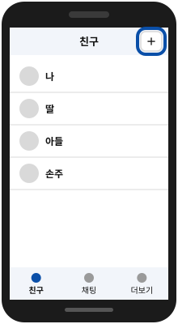
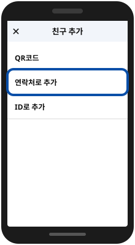
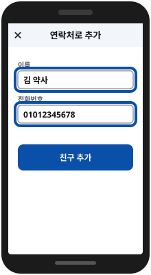
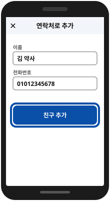

카카오톡
카카오톡 친구 추가하기
새로 알게 된 사람을 전화번호로 카카오톡 친구에 넣는 방법이에요.
휴대폰 종류(삼성·아이폰 등)에 따라 버튼 이름이나 위치가 조금 다를 수 있어요.
이렇게 따라 해보세요
그림 속 파란 테두리가 누를 곳이에요.
-
카카오톡을 켜요
노란 말풍선 그림의 앱을 누르세요.

-
‘친구’ 화면으로 가요
아래쪽 맨 왼쪽의 사람 모양을 누르세요.

-
친구 추가 버튼을 눌러요
오른쪽 위에 있는 사람 옆에 ＋가 붙은 모양을 누르세요.

-
‘연락처로 추가’를 골라요
이름과 전화번호를 적는 칸이 나옵니다.

-
이름과 번호를 적어요
이름은 알아보기 쉽게, 번호는 숫자만 적으세요.

-
‘친구 추가’를 눌러요
친구 목록에 이름이 보이면 끝이에요.

알아두세요
휴대폰 연락처에 저장된 사람은 따로 추가하지 않아도 카카오톡 친구 목록에 자동으로 나타나는 경우가 많아요.